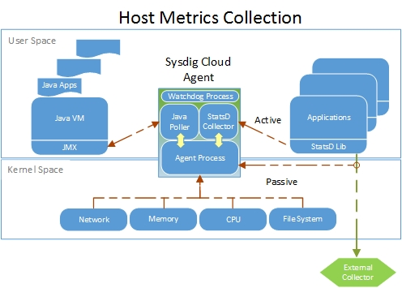

Integrate StatsD Metrics
StatsD is an open source project built by Etsy. Using a StatsD library specific to your application's language, it allows for the easy generation and transmission of custom application metrics to a collection server.
The Sysdig agent contains an embedded StatsD server, so your custom metrics can now be sent to our collector and be relayed to the Sysdig Monitor backend for aggregation. Your application metrics and the rich set of metrics collected by our agent already can all be visualized in the same simple and intuitive graphical interface. Configuring alert notifications is also exactly the same.
Contents
Installation and Configuration
The Statsd server, embedded in Sysdig agent beginning with version 0.1.136, is pre-configured and starts by default so no additional user configuration is necessary. Install the agent in a supported distribution directly or install the Docker containerized version in your container server and you're done.
Sending StatsD Metrics
Active Collection
By default, the Sysdig agent's embedded StatsD collector listens on the standard StatsD port, 8125, both on TCP and UDP. StatsD is a text based protocol, where samples are separated by a \n .
Sending metrics from your application to the collector is as simple as:
echo "hello_statsd:1|c" > /dev/udp/127.0.0.1/8125
The example transmits the counter metric "hello_statsd" with a value of '1' to the Statsd collector listening on UDP port 8125. Here is a second example sending the output of a more complex shell command giving the number of established network connections:
echo "EstablishedConnections:`netstat -a | grep ESTAB | wc -l`|c" > /dev/udp/127.0.0.1/8125
The protocol format is as follows:
METRIC_NAME:METRIC_VALUE|TYPE[|@SAMPLING_RATIO]
Metric names can be any string except reserved characters: |#:@ . Value is a number and depends on the metric type. Type can be any of: c, ms, g, s . Sampling ratio is a value between 0 (exclusive) and 1 and it's used to handle subsampling. When sent, metrics will be available in the same display menu for the subviews as the built in metrics.
Passive Collection
In infrastructures already containing a third party StatsD collection server, StatsD metrics can be collected "out of band". A passive collection technique is automatically performed by our agent by intercepting system calls - as is done for all the Sysdig Monitor metrics normally collected. This method does not require changing your current StatsD configuration and is an excellent way to 'test drive' the Sysdig Monitor application without having to perform any modifications other than agent installation.
The passive mode of collection is especially suitable for containerized environments where simplicity and efficiency are essential. With the containerized version of the Sysdig Monitor agent running on the host, all other container applications can continue to transmit to any currently implemented collector. In the case where no collector exists, container applications can simply be configured to send StatsD metrics to the localhost interface (127.0.0.1) as demonstrated above - no actual StatsD server needs to be listening at that address.
Effectively, each network transmission made from inside the application container, including statsd messages sent to a non existent destination, generates a system call. The Sysdig agent captures these system calls from its own container, where the statsd collector is listening. In practice, the Sysdig agent acts as a transparent proxy between the application and the StatsD collector, even if they are in different containers. The agent correlates which container a system call is coming from, and uses that information to transparently label the StatsD messages.
|  |
The above graphic demonstrates the components of the Sysdig agent and where metrics are actively or passively collected. Regardless of the method of collection, the number of StatsD metrics the agent can transmit is limited by your payment plan.
Note 1: When using the passive technique, ICMP port unreachable events may be generated on the host network.
Note 2: Some clients may use IPv6 addressing (::1) for the "localhost" address string. Metrics collection over IPv6 is not supported at this time. If your StatsD metrics are not visible in the Sysdig Monitor interface, please use "127.0.0.1" instead of "localhost" string to force IPv4. Another solution that may be required is adding the JVM option: java.net.preferIPv4Stack=true.
Note 3: When StatsD metrics are not continuously transmitted by your application (once per second as in the case of all agent created metrics), the charts will render a 'zero' or null value. Any alert conditions will only look at those Statsd values actually transmitted and ignore the nulls.
For more detail on the benefits of Sysdig Monitor's implementation of StatsD, please see the article State of the Art: StatsD Deployment Strategies in Containerized Environments.
Supported Metric Types
Counter
A counter metric is updated with the value sent by the application, sent to the Sysdig Monitor backend, and then reset to zero. You can use it to count, for example, how many calls have been made to an API:
api.login:1|c
You can specify negative values to decrement a counter.
Gauge
A gauge is a single value that will be sent as is:
table_size:10000|g
These are plotted as received, in the sense, they are at a point in time metrics. You can achieve relative increments or decrements on a counter by prepending the value with a + or a - respectively. As an example, these three samples will cause table_size to be 950:
table_size:1000|g table_size:-100|g table_size:+50|g
Note
In Sysdig Monitor, the gauge value is only rendered on the various charts when it is actually transmitted by your application. When not transmitted, a null is plotted on the charts which is not used in any calculations or alerts.
Set
A set is like a counter, but it counts unique elements. For example:
active_users:user1|s active_users:user2|sactive_users:user1|s
Will cause the value of active_users to be 2.
Metric Labels
Labels are an extension of the StatsD specification offered by Sysdig Monitor to offer better flexibility in the way metrics are grouped, filtered and visualized. Labeling can be achieved by using the following syntax:
enqueued_messages#users,country=italy:10|c
In general, this is the syntax you can use for labeling:
METRIC_NAME#LABEL_NAME=LABEL_VALUE,LABEL_NAME ...
Labels can be simple strings or key/value pairs, separated by an = sign. Simple labels can be used for filtering in the Sysdig Monitor web interface. Key/value labels can be used for both filtering and segmentation.
Note
Label names prefixed with 'agent.label' are reserved for Sysdig agent use only and any custom labels starting with that prefix will be ignored.
Limits
The number of StatsD metrics the agent can transmit is limited to 100 for the host and 100 for all running containers combined. If more metrics are needed please contact your sales representative with your use case.
Compatible Clients
Every StatsD compliant client works with our implementation. Here is a quick list, it's provided just as reference. We don't support them, we support only the protocol specification compliance.
A full list can be found at the StatsD GitHub page.
Turning Off StatsD Reporting
To disable Sysdig agent's embedded StatsD server, append the following lines to the /opt/draios/etc/dragent.yaml configuration file in each installed host:
statsd: enabled: false
After modifying the configuration file, you will need to restart the agent with:
service dragent restart
Changing the StatsD Listener Port and Transport Protocol
To modify the port that the agent's embedded StatsD server listens on, append the following lines to the /opt/draios/etc/dragent.yaml configuration file in each installed host (replace #### with your port):
statsd: tcp_port: #### udp_port: ####
Characters Allowed For StatsD Metric Names
Use standard ASCII characters, we suggest also to use . namespaces as we do for all our metrics.
Allowed characters: a-z A-Z 0-9 _ .
For more information on adding parameters to a container agent's configuration file, see the FAQ: How Can I Edit the Agents Configuration File.